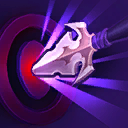
Starter
Tyrande
Accurate Mark
Gain the benefits of Trueshot Aura and all Hunter's Mark talents. Increases Hunter's Mark duration by 4 seconds.
◆Repeatable Quest: Basic Attacks against enemy Heroes increases Attack Damage by 0.33.
Retain 50% of Quest progress after winning the game.
All Talents
Gain all talents in a tier whenever you reach a non-Heroic talent tier.
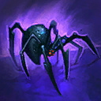
Starter
Nazeebo
Arachnophile
Gain the benefits of all Corpse Spiders talents. Improved Corpse Spider talents become available to choose.
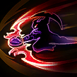
Starter
Illidan
Burning Blades
Gain the benefits of Fiery Brand.
Basic Attacks increase Attack Speed by 0.5%, up to 800%. After 2.25 seconds, Burning Blades rapidly decays.
Dealing damage with Dive or Sweeping Strike grants 1 stack of Burning Blades.
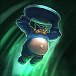
Starter
The Lost Vikings
Button Masher
Gain the benefits of Viking Bribery, Spin To Win!, Norse Force, and Jump!.
Reduces Spin To Win!, Norse Force, Jump!, and Go Go Go! cooldowns by 50%.
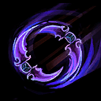
Starter
Illidan
Deep Dive
Gain the benefits of all Dive talents.
Dive gains unlimited range and deals bonus damage to Heroes equal to 5% of their maximum Health.
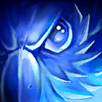
Starter
Tyrande
Elune's Ranger
Gain the benefits of all Sentinel talents and Sentinel gains a 3rd charge. Reduces the Mana Cost of Sentinel by 100%.
◆Repeatable Quest: Hitting enemy Heroes with Sentinel increases its damage by 5%.
Retain 25% of Quest progress after winning the game.
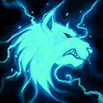
Starter
Thrall
Frostwolf's Fury
Gain the benefits of Frostwolf Pack, Ancestral Wrath, Frostwolf's Grace, and Spirit Shield.
Basic Attacks grant 1 stack of Frostwolf Resilience.
Great Viking Hoard
Enemy Heroes drop 4 Regeneration Globes and enemy Structures drop 1 Regeneration Globe on death. These globes do not turn Neutral.
◆Quest: Viking Hoard grants 0.5% Attack Damage, Spell Power, Movement Speed, and maximum Health per Regeneration Globe.
Retain 25% of Viking Hoard's Quest progress after winning the game.
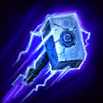
Starter
Muradin
Hammerer
Gain the benefits of all Storm Bolt talents. Storm Bolt deals bonus damage to enemy Heroes equal to 7% of their maximum Health.
Retain Storm Bolt's Quest progress after winning the game.
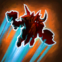
Starter
Muradin
Jumper
Gain the benefits of all Dwarf Toss talents and gain Unstoppable during the jump.
Increases Dwarf Toss's range and radius by 100%.
◆Repeatable Quest: Hitting enemy Heroes with Dwarf Toss increases its damage by 10%.
Retain 50% of Quest progress after winning the game.
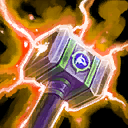
Starter
Thrall
Lightning Rod
Thrall's Basic Attack becomes ranged. Gain the benefits of Nexus Blades and Elemental Assault.
Increases Feral Spirit and Chain Lightning's range by 50%.
Meteor Shower
Gain the benefits of Elune's Gift. Every Basic Attack has a 33% chance to fire a Lunar Flare at a random nearby enemy.
Retain Lunar Flare's Quest progress after winning the game.
Missile Barrage
Gain the benefits of all Magic Missiles talents.
After the initial missiles, Magic Missiles fires a barage of 15 magic missiles over 1 second dealing 50% damage, but its cooldown is increased to 7 seconds.
The additional magic missiles deal 10% damage to Structures.
Additional missiles do not benefit from Seeker.
Orbing
Gain the benefits of all Arcane Orb talents.
Arcane Orb fires 2 additional orbs in an arc.
Overwhelming Power
Increases Attack Speed, Movement Speed, Spell Power, and all damage dealt by 20%.
Basic Abilities recharge 50% faster.
Heal for 10% of damage dealt.
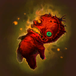
Starter
Nazeebo
Power Ritual
Basic Attacks deal bonus damage equal to your Voodoo Ritual stacks and splash for 40.0% damage.
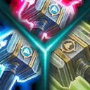
Starter
Thrall
Quests Galore
Gain the benefits of Echo of the Elements, Crash Lightning, Maelstrom Weapon, Frostwolf Pack, and Thunderstorm.
Completing Crash Lightning and Echo of the Elements will allow Chain Lightning to bounce on the same target.
Retain 50% of Quest progress on these Quests after winning the game.
Self Reliant
Your AI teammates gain 25 permanent Armor and 300% increased Health and Mana regeneration.
Your AI teammates heal for 33% of their damage dealt.
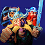
Starter
The Lost Vikings
Specialized Vikings
Olaf gains the benefits of Large and In Charge, 40 permanent Armor, and reduces Olaf's Charge cooldown by 25%.
Increases Baleog's Attack Speed by 40%.
Increases Erik's Attack Range by 5.5.
Teleporter
Gain the benefits of all Teleport talents. Calamity deals 50% damage to non-Heroes.
Increases Teleport's range by 100% and maximum charges by 2.
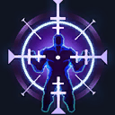
Starter
Illidan
True Unending Hatred
Gain the benefits of Nexus Blades and Unending Hatred. Increases Unending Hatred's Quest stacks obtained from all sources by 25%.
Retain 50% of Quest progress after winning the game.
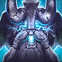
Starter
Muradin
Unstoppable Avatar
Gain the benefits of Avatar, Unstoppable Force, and all Second Wind talents. Avatar is always active.
Basic Attacks deal bonus damage equal to 3% of your current Health.
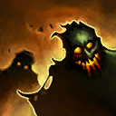
Starter
Nazeebo
Zombie Handler
Gain the benefits of all Zombie Wall talents.
Reduces Zombie Wall's cooldown and Mana cost by 25% and increases the Zombies' maximum Health by 50%.
When a nearby enemy Minion dies, it has a 50.0% chance to summon a Zombie.
Destruction
◆Quest: Destroy enemy Forts or Keeps.
Reward: After destroying 6 Forts and Keeps, gain 1 common Boon.
Reward: After destroying 12 Forts and Keeps, gain 1 uncommon Boon.
Reward: After destroying 24 Forts and Keeps, gain 1 rare Boon.
Retain Quest progress after winning the game.
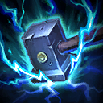
Common
Muradin
Electrocution
Increases Thunder Clap's Slow by 20%.
Elune's Reach
Increases Light of Elune's range by 50%.
Endurance
Increases maximum Health of ALL allies by 7%.
Fast Feet
Increases Movement Speed of ALL allies by 6%.
Fast Uproot
Reduces the initial delay and cast time of Zombie Wall by 50%.
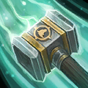
Common
Thrall
In a Rush
Increases Windfury's Movement Speed bonus by 10% and its duration by 0.5 seconds.
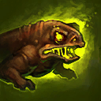
Common
Nazeebo
Jar of Frogs
Increases maximum charges of Plague of Toads by 2.
Kill Contract
◆Quest: Get 25 Hero Takedowns. Progress is lost between rounds.
Reward: Gain 1 common and 1 uncommon Boon.
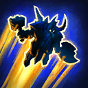
Common
Muradin
Light Feet
Reduces Dwarf Toss's Mana cost by 30.
Long Blades
Increases Attack Range by 0.75.

Common
Nazeebo
Many Rituals
Gain 40 Voodoo Ritual stacks now and at the start of every game.
Additional stacks increase Voodoo Ritual stacks by an additional 20.
Nimble Legs
Increases Movement Speed of Corpse Spiders by 20%.
Path of the Assassin
Increases Basic Attack damage by 5 per level.
Additional stacks increase Basic Attack damage by 2.0.
Path of the Warrior
Increases maximum Health by 40 per level.
Path of the Wizard
Increases maximum Mana by 10 and Mana Regeneration by 0.2 per second per level.
Path of the Wizard
Increases maximum Mana by 10 and Mana Regeneration by 0.2 per second per level.
Better to be a wizard than a mage.
Powerful
Increases Spell Power and Attack Damage of ALL allies by 5%.
Reinforced Walls
Increases maximum Health of allied Structures by 15%.
Ring of Magic
You and allied Heroes recharge Ability cooldowns 5% faster.
Ring of Regeneration
You and allied Heroes regenerate 5 Health per second.
Selfish Power
Increases Spell Power by 7.5%.
Amplified Healing
Increases regeneration effects and all healing received by 25%.
Additional stacks increase regeneration effects and all healing received by 10%
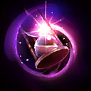
Uncommon
Li-Ming
Arcane Loop
Using a Basic Ability reduces the cooldown of your other Basic Abilities by 0.5 seconds.
Big Star
Increases Lunar Flare's radius by 20%.
Bye Bye!
Reduces your Team's Hearthstone cast time by 75%.
Convenient Portals
Creates a permanent Portal between the top lane and the bottom lane, only usable by your Team.

Uncommon
Demolitionist
Increases damage dealt to Structures by 15%.
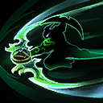
Uncommon
Illidan
Extended Assault
Increases Sweeping Strike's Basic Attack damage bonus duration by 3 seconds.
Farshot
Increases Magic Missiles's range by 15%.
Gathering Power
Increases Spell Power by 15%.
Additional stacks increase Spell Power by 10%.
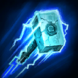
Uncommon
Muradin
Heavy Hammer
Increases Storm Bolt's Stun duration by 0.25 seconds.
Minion Killer
Increases damage dealt to Minions and Mercenaries by 15%.
Nexus Frenzy
Increases Attack Speed by 15%.
Additional stacks increase Attack Speed by 8%.
Nexus Range
Increases Attack Range by 1.1.
Additional stacks increase Attack Range by 0.5.
Owling
Reduces Sentinel's cooldown by 3 seconds.
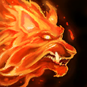
Uncommon
Thrall
Pinned Down
Increases Feral Spirit's Root duration by 0.25 seconds.
Quick Mount
Increases the Movement Speed bonus of Summon Mount by 40% for ALL allies.
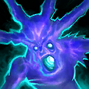
Uncommon
Nazeebo
Quick Scare
Increases Ravenous Spirit's duration by 2 seconds and Movement Speed by 15%.
Searing Attacks
Increases Attack Damage by 20%.
Additional stacks increase Attack Damage by 10%.
Stunning Light
Increases Lunar Flare's Stun duration by 0.25 seconds.
Superiority
Gain 10 Armor against non-Heroic enemies, reducing the damage taken from non-Heroic enemies by 10%.
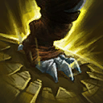
Uncommon
Nazeebo
Tantrum
Reduces Gargantuan's Stomp's cooldown by 3 seconds and increases the stomp damage by 25%.
Automatic Repairs
Allied Structures regenerate 50 Health per second.
Does not affect your allied Core.
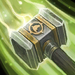
Rare
Thrall
Breeze
Reduces Windfury's cooldown by 4 seconds and its Mana Cost by 20.
Bribery
Automatically bribe a neutral Mercenary camp to your side every 300 seconds. Camps taken this way respawn 50% faster. Does not work on Bosses.
Additional stacks reduce the cooldown by 60 seconds.
BUDDY
A friendly Drone follows you around, healing you for 154 Health every 3 seconds.
BUDDY shoots a missile every 4 seconds at the nearest enemy, dealing 142 damage in the area.
Additional stacks reduce BUDDY's missile cooldown by 1 second and healing beam cooldown by 0.25 seconds.
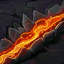
Rare
Thrall
Crushing Sunder
Gain the benefits of Worldbreaker.
Increases Sundering's Stun duration by 1.5 seconds.
Deadly Mark
Increases Hunter's Mark's Armor reduction by 10.
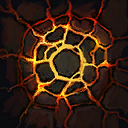
Rare
Thrall
Earth Shatterer
Earthquake gains unlimited range.
Reduces Earthquake's cooldown by 50 seconds.
Efficient Morph
Increases Metamorphosis's maximum Health bonus by 100% and reduces its cooldown by 40 seconds.
Elune's Grace
Increases maximum charges of Light of Elune by 1.
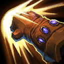
Rare
Muradin
Fast Puncher
Haymaker gains 1 additional charge.
Reduces Haymaker's cooldown by 20 seconds.
First Aid
Regenerate 1% of your maximum Health per second.
Additional stacks increase healing by 0.5% of maximum Health per second.
Globe Huffer
Spawns a Regeneration Globe near a random allied Hero every 12 seconds, with you twice as likely to be chosen.
Your Regeneration Globes take 100% longer to turn Neutral.
Additional stacks reduce the cooldown by 4 seconds.
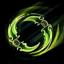
Rare
Illidan
Hard Impact
Dive Stuns enemies for 0.25 seconds.
Improved Archon
Reduces Disintegrate's cooldown to 0.5 seconds and its Mana cost to 5.
Mercenary Lord
Friendly non-Boss Mercenaries near you deal 50% more damage.
Promote
Allied Minions take 25% reduced damage from non-Heroic enemies and deal 50% increased damage to non-Heroic enemies.
Additional stacks increase the damage by 20%.
Quick Lightning
Reduces Chain Lightning's cooldown by 3 seconds.
Regenerative Core
Your Core regenerates 2% of maximum Health per second while its Shield is active.
Surprise Hunt
Increases The Hunt's Stun duration by 1 second and reduces its cooldown by 30 seconds.
Very Heavy Impact
Dwarf Toss Stuns enemies for 0.75 seconds.
Wave of Doom
Gain the benefits of Repulsion.
Wave of Force reduces the Spell Armor of enemy Heroes by 50 for 0.5 seconds.
Belligerent Gladiator
Increases Gladiator's Medallion's Unstoppable duration by 2 seconds.
Blessing of the Dragons
Your AI teammates gain 500 maximum Health and 20% Movement Speed, and Basic Abilities recharge 35.0% faster.
Electric Shock
Chain Lightning Stuns enemies hit for 0.5 seconds.
Emergency Measure
On fatal damage, your AI teammates gain a Shield equal to 50% of Maximum Health for 4 seconds.
This effect has a 60 second cooldown per Hero.
Experienced
Increases your team's experience gain by 15%.
Gladiator's Medallion
Cooldown: 60 seconds
Activate to become Unstoppable for 2 seconds.
Additional stacks reduce the cooldown by 20 seconds.
Need More Mana!
Takedowns restore Mana equal to 30% of Li-Ming's maximum Mana.
Physical Armor
Gain permanent 10 Physical Armor.
Additional stacks increase Physical Armor by 5.

Epic
Physical Leech
Basic Attacks heal for 10% of the damage dealt.
Additional stacks increase healing by 5%.
Resurgence of the Storm
Upon dying, revive back at your Altar after 5 seconds. This effect has a 300 second cooldown.
Additional stacks reduce the cooldown by 60 seconds.
Shadowstalker
Shadowstalk grants Unrevealable for 4 seconds.
Reduces Shadowstalk's cooldown by 45.
Spell Armor
Gain permanent 10 Spell Armor.
Additional stacks increase Spell Armor by 5.
Spell Leech
Abilities heal for 10% of the damage dealt.
Additional stacks increase healing by 5%.
Star Rain
Starfall gains unlimited range.
Reduces Starfall's cooldown by 40.
Storm Shield
Gain a Shield equal to 25% of your maximum Health. Shields regenerate quickly as long as you haven't taken damage recently.
Additional stacks increase the Shield by 10% of maximum Health.
Thundering Smash
Thunder Clap gains 1 additional charges.
Reduces Thunder Clap's cooldown and Mana cost by 40%.
Unstoppable Dive
Dive grants Unstoppable for the duration.
Army of BUDDYs
Your AI teammates gain their own BUDDYs with 50% damage and healing.
Bloodlust
Increases Attack Speed by 20% and Movement Speed by 17.5%
Basic Attacks heal for 15% of the damage dealt.
Critical Healing
Frostwolf Resilience has a 50% chance to grant 1 additional stack.
Critical Mass
Getting a Takedown will refresh the cooldown on all of your Abilities.
Critical Power
Takedowns increase Spell Power by 1%.
Retain 50% of Quest progress after winning the game.
Legendary
Nazeebo
Great Ritual
Increases Voodoo Ritual stacks gained by 100%.
Legally Blind
Gain immunity to Blind.
Lunar Shower
Lunar Flare triggers a second time 1.75 seconds later.
Nano Boost
Increases Spell Power by 15% and recharge Basic Abilities 75% faster.
Regenerate 2 Mana per second.
Nano Boost
Increases Spell Power by 15% and recharge Basic Abilities 75.0% faster.
RAGE!
Gain the benefits of Bronzebeard Rage.
Increases Bronzebeard Rage's radius by 200% and reduces its damage interval by 0.5 seconds.
Second Start
Gain 1 more Starter boon.
Obtain an additional Curse every game.
No boons matched the current filter.